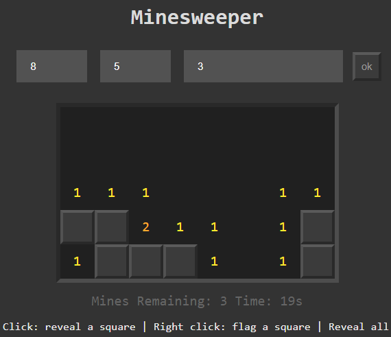
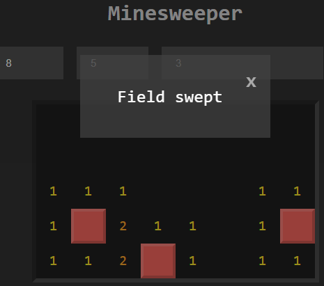
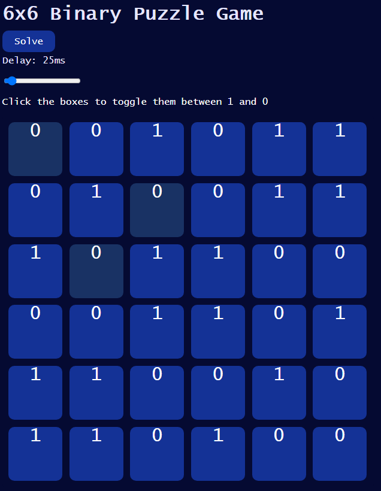

TAS FACULTY
ASSESSMENT TASK NOTIFICATION
Software
Design & Development
HEAD
TEACHER: Ms McBride
IT courses at the Backwattle Bay Campus of Sydney Secondary College:
The Department of Education has 3 senior courses in IT for Year 11 & 12 study. All are offered at Blackwattle Bay Campus and in order of complexity, they are:
The Department of Education has 3 senior courses in IT for Year 11 & 12 study. All are offered at Blackwattle Bay Campus and in order of complexity, they are:
- SDD (Software Development & Design) - link to SDD student projects
- IPT (Information Processes & Technology) - link to IPT student projects
- Document - IPT vs SDD at Blackwattle Bay - link to comparison document
- IDT (Information and Digital Technology) - link to course details
Teacher: Nev Goodyer - neville.goodyer@det.nsw.edu.au
Information about Industrial Technology Multimedia can be found at the Education Standards website.
Some SDD projects are shown below:
Year 12 2020 final project:

SDD 2020 Minesweeper - Harvey
https://harveyb02.github.io/Minesweeper/
Screen clipping taken: 15/06/2021

Minesweeper solved!!
https://harveyb02.github.io/Minesweeper/
Screen clipping taken: 15/06/2021
Year 11 2021 Binary puzzle project:

Y11 SDD 2021 Binary Puzzle with Backtracking - Oliver:
https://y11sddgroup.github.io/binary-puzzle/v1.07/puzzle.html
Screen clipping taken: 15/06/2021 13:21 PM